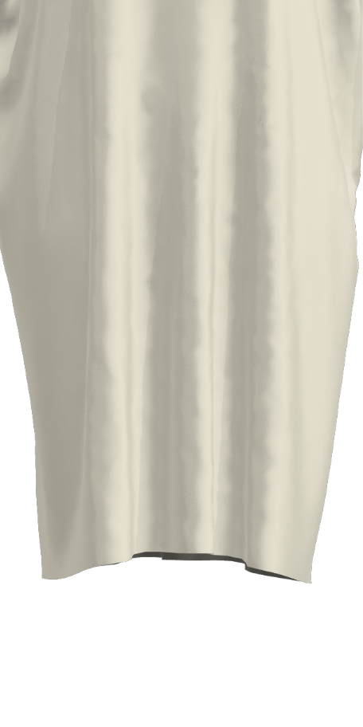
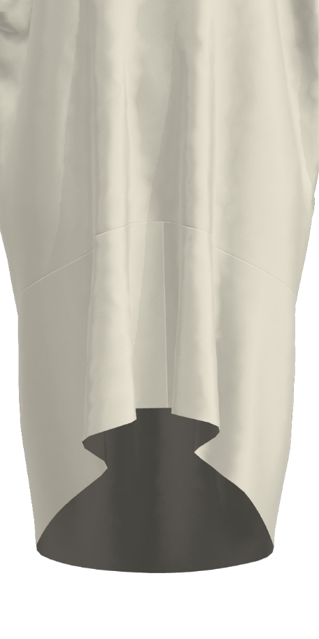
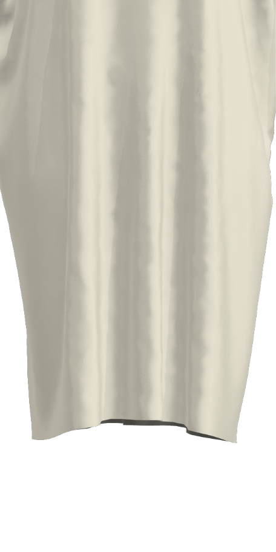
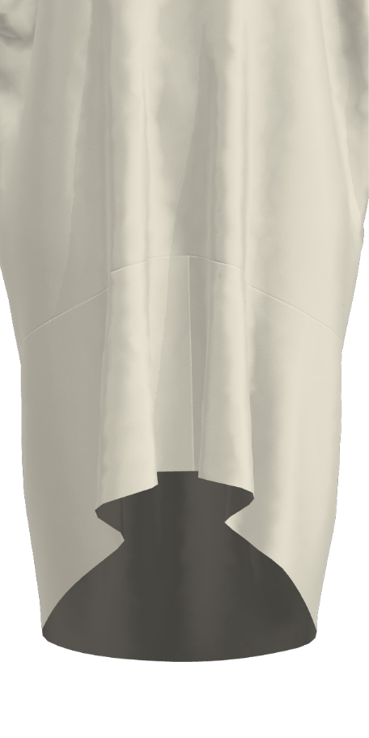
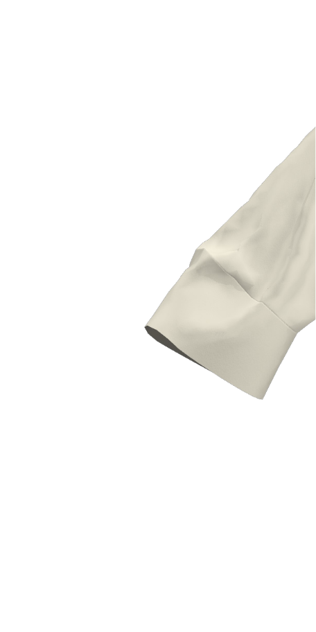
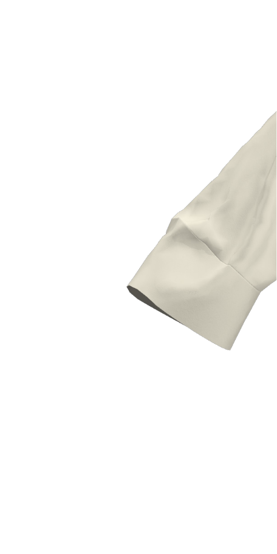

Long Tshirt
This Long Tshirt is based on the same pattern as the Cropped Tshirt, it's just longer.
Considerations
The width of the cloth is approximately the circumference of the garment around the body. If you want a more voluminous form or are a larger size go for a wider cloth, likewise with you want a more fitted silhouette.
Recommendations
The drape or stiffness of the cloth will alter dramatically the final look of the garment. For a fluid drapey look, go for a chiffon, crepe de chine, or other soft fabric, for something more architectural chose a stiffer fabric.

Making the Long Tshirt
There are three methods of using the Make/Use system - Pattern, Print or Template

Pattern
Simple line diagram to print onto paper at full scale – the closest to using a traditional dressmaking pattern. Good if you have fabric at the exact width or know how to use software to change the pattern to fit. Available as ai file (Adobe illustrator / Inkscape for modifications), or pdf. Print tiled and stick together, or take to a large format printer.

Screen printing or digital printing files to put the patterns directly onto fabric. Good if you want a printed garment, some of the guide for making the garments are embedded in the print file to enable an easier understanding of the making process. Can be expensive.

Template
Lasercut templates printed onto rigid paper or card that allow a maker to draw required patterns onto fabric. This is a modular system that enables a Make/Use garment to be made from any width fabric. Low cost if using printed method, great for students of all ages and home sewers.
Making the Long Tshirt
There are three methods of using the Make/Use system - Pattern, Print or Template
Pattern
Simple line diagram to print onto paper at full scale – the closest to using a traditional dressmaking pattern. Good if you have fabric at the exact width or know how to use software to change the pattern to fit. Available as ai file (Adobe illustrator/Inkscape for modifications), or pdf. Print tiled and stick together, or take to a large format printer.
Screen printing or digital printing files to put the patterns directly onto fabric. Good if you want a printed garment. Some of the guide for making the garments are embedded in the print file to enable an easier understanding of the making process. Can be expensive.
Templates
Lasercut templates printed onto rigid paper or card that allow a maker to draw required patternsonto fabric. This is a modular system that enables a Make/Use garment to be made from any width fabric. Low cost if using printed method, great for students of all ages and home sewers.
Making the Long Tshirt from a Pattern
You will need: 130cm long of ~135cm wide cloth, a pattern printed at 100%
You can print the file as is from the pdf and set your printer settings to 'tile', and 100%, tape your pieces together and you have a full scale pattern. You can also open and modify the pattern in Illustrator, Inkscape or any similar vector based program to fit the width of fabric you want to use. If you do that, be careful to not select the neckline before stretching/shrinking it to fit the new width.
This pattern can be made from any width cloth, remembering that the width of the cloth determines the circumference of the garment assuming you don’t make any additional modifications to the design such as pleats/gathers etc, and also determines the span from sleeve hem to sleeve hem.
Find a fabric you like the look and feel of, make sure it is something you can sew based on your abilities and equipment, and away you go!
Making the Long Tshirt from a Print
You will need: 130cm long of ~135cm wide cloth. Access to digital print facilities.
The attached files were designed for Digital Printing. There are a range of neckline options
available with the same base print, including one without an neckline for you to determine as desired.
The fabric chosen for printing on will determine the overall look of the garment. The Long Tshirt shown
in the images was printed on Silk Organza.
If you like you could modify the print to suit a different width fabric in Photoshop, or take it as
a starting point to have a play with other possible prints inspired by the beaituful work done for this
project by Greta Menzies. Enjoy!
Making the Long Tshirt from Templates
You will need a fabric of your choice, approximately 130cm long. A4/A3 printer or Lasercutter, Paper or card.
The Long Tshirt can be modified in a number of ways to suit your preferences. Click on the
neckline, sleeve and body tiles to cycle through the various styles. Your selections will be
used to display garment sizing and to determine the fabric size requirements.
The pattern templates required for your chosen garment will also be displayed. Hover over
pattern pieces to enlarge. To download and print the original full-sized templates, please click
on the link provided.


 





 



| 110cm wide x 75cm long | ||
| 110cm | 50cm | 50cm |
| Or enter custom values below to calculate fabric requirements. | ||
|---|---|---|
Please enter a positive number value in 'cm' to determine your fabric size requirements